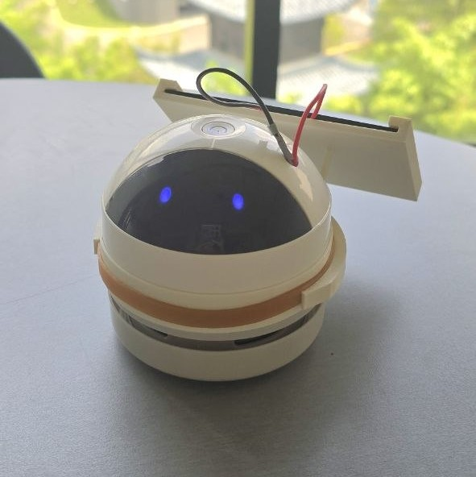
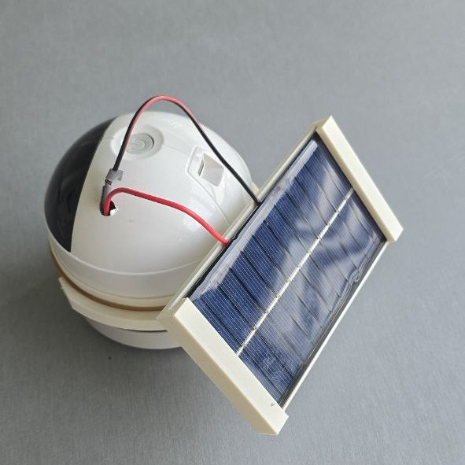
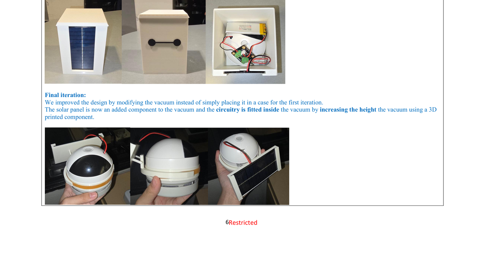
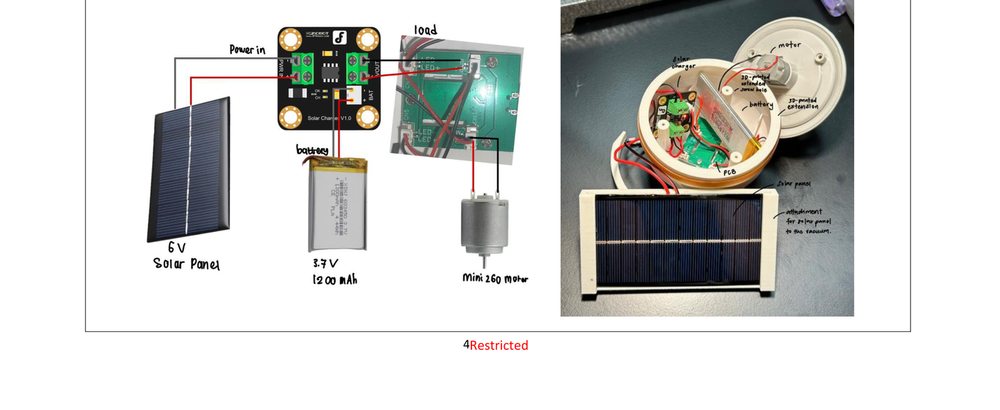
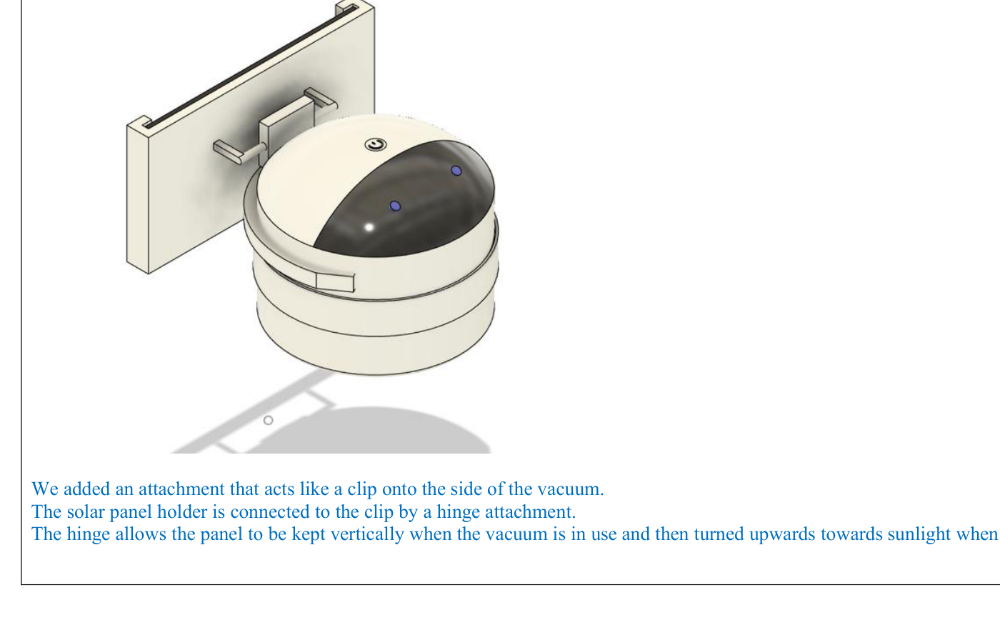
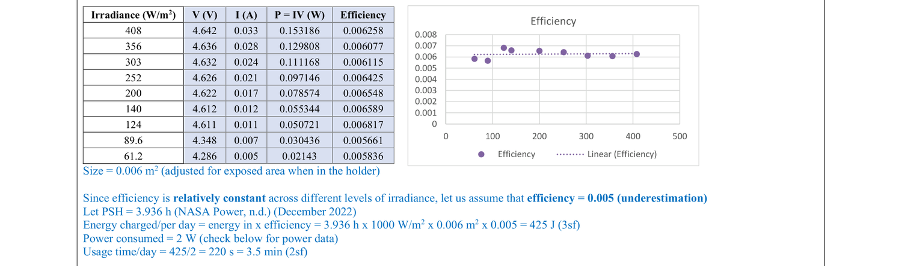
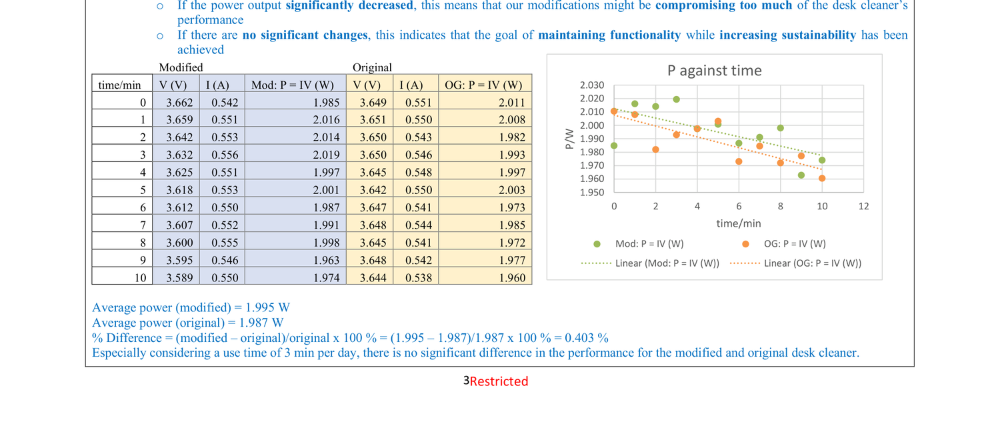

Desk cleaners are usually charged by USB — unsustainable, since most of Singapore's electricity comes from burning natural gas, and inconvenient, since the cable is easy to forget or lose. This project retrofits a handheld desk cleaner with a solar panel and charge controller so it can run on sunlight without giving up its usability.
View Full Report
6V, 1W, 110mm x 60mm (100mm x 60mm exposed in the holder)
3.7V pouch cell — only 0.1Ah is actually needed for the load
+1.2cm vertical extension, 3D-printed spacer to house the electronics
Custom adjustable, hinged mount — folds away during use, angles toward the sun to charge
The solution integrates a solar panel with the desk cleaner's existing charge controller, so it can be used without ever being plugged in. The battery was swapped from the original cylindrical cell to a slimmer pouch cell — using the original is possible too, but needs a JST PH2.0 connector and a crimp. The panel folds flat against the body during use and flips up on its hinge to catch the sun while charging.

A pouch battery matching the charge controller's connector replaces the bulkier original cylindrical cell, sized down to the 3.7V, 0.1Ah the desk cleaner actually needs.
A 6V, 1W panel wires directly into the charge controller, sized so the holder's exposed surface still fits neatly against the body.
A 3D-printed spacer extends the housing by 1.2cm vertically, just enough to fit the new electronics between the two halves without changing the grip.
A custom 3D-printed, hinged holder lets the panel swing out of the way during cleaning and angle toward the sun when it's time to charge.





Panel efficiency stayed roughly constant (~0.5–0.7%) across irradiance from 61 to 408 W/m², so a conservative 0.5% was used for sizing — an underestimate that keeps the energy budget honest.
With Singapore's ~3.94 peak sun hours (NASA POWER, Dec 2022), the panel charges roughly 425 J per day — enough for about 3.5 minutes of use, just over the target 3-minute daily need.
Average power was 1.995 W modified vs. 1.987 W original — a 0.403% difference. The solar retrofit doesn't compromise the desk cleaner's actual cleaning power.
The final attachments and panel add height but stay lightweight, so the desk cleaner is still usable one-handed — the goal of maintaining functionality while going solar was met.